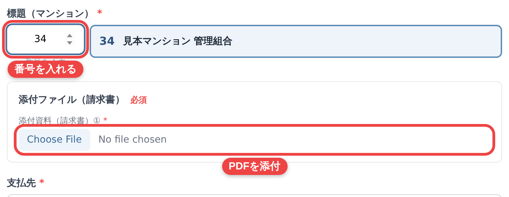
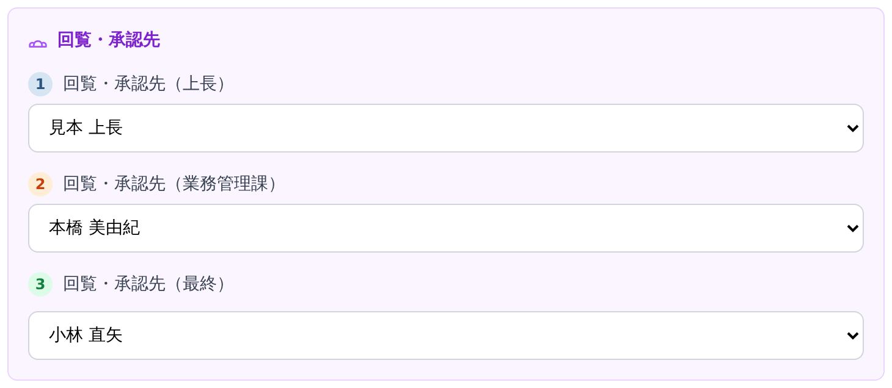
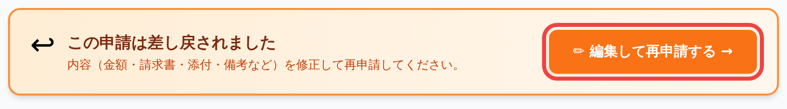

請求回覧 フロント向け かんたんマニュアル
建物管理部 請求回覧システム
業務管理課が登録▶あなた：回覧申請▶① 上長▶② 業務管理課▶③ 会計課／本社経理▶完了
▶

マンション番号を入れて、請求書PDFを添付
3
支払先を選んで、空いている所を入れる （ここからは 2-1・2-2 共通）
管理組合：勘定科目 と 手数料（円は税抜）
会社（TD）委託内：追加なし
会社（TD）元請：見積書PDFを必ず添付

マンション・請求書・回覧先は自動で入ります
▶

理由どおりに直して「↩ 再申請する」